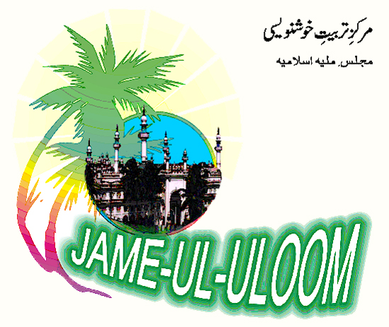
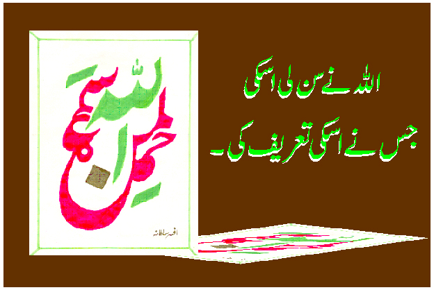
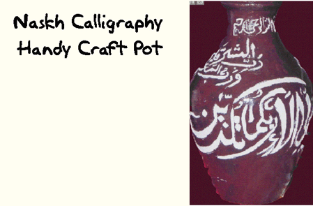
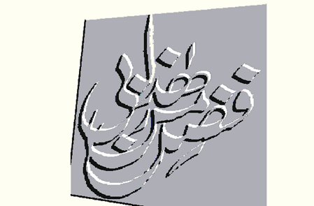
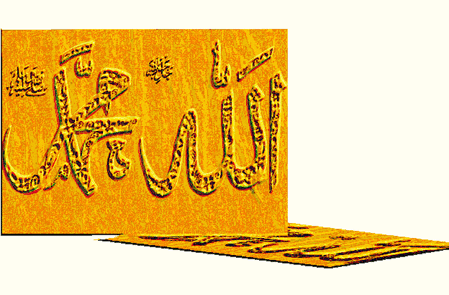
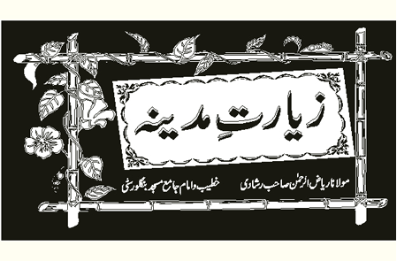
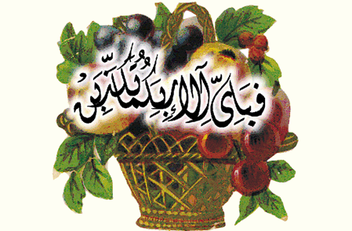
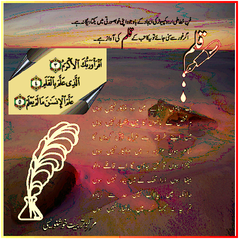

Calligraphy Centre being run at Jamia Masjid premises
The center for learning urdu language and urdu calligraphy was started in the year 1981. It was felt that the students learning in government and private schools are not having an opportunity to learn urdu language and the art of urdu calligraphy, hence Majlis-e-Millia Islamia with the help from the Bureau for Promotion of Urdu, Ministry of Human Resources, New Delhi started this course.
Though NCPUL has withdrawn the support, MMI is running this course which consists of a 2 years calligraphy training along with learning urdu language and use of computers where students can learn basics in computer and DTP and use of urdu software.
The students also are given a chance to learn diniyat and tailoring and also pottery painting. This course is very useful for those who have failed in 10th std. or who don’t want to continue their studies after passing their 10th std. Muslim girls can come in full purdah and they have a secure learning atmosphere in the Mosque along with a very good library. The students can also get jobs and help their family financially. All this facility is free of cost. No fee is charged and all the expenditure is borne by MMI and Jamia-Ul-Uloom. The students and their parents can take full advantage of this facility to learn our own urdu language and also get themselves skilled and fit to be appointed.

For current course details and fees, please contact the office (Contact).
Gallery

Calligraphy Centre artwork “Cali1” 
Calligraphy Centre gallery 
Calligraphy Centre gallery 
Calligraphy Centre gallery 
Calligraphy Centre gallery 
Calligraphy Centre gallery 
Calligraphy Centre gallery 
Calligraphy Centre gallery